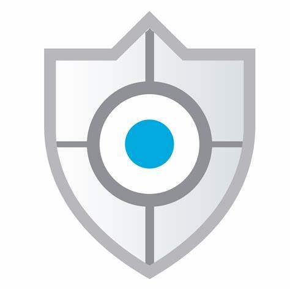

Internet Banking allows you to manage your finances conveniently from anywhere, at any time, using your computer or mobile device. With our secure and user-friendly platform, you can access your account information, perform transactions, and manage your finances with ease.
With Internet Banking, managing your finances has never been easier. Sign up today and experience the convenience and control of banking at your fingertips.
In today’s digital age, protecting your financial information is more crucial than ever. At Bank Name, we understand the importance of safeguarding your personal and financial data. Security is not just a priority; it's our commitment to ensuring that your banking experience is secure, reliable, and trustworthy.
Your financial information is valuable and potentially vulnerable to various threats. Cybercriminals are continually evolving their tactics to exploit weaknesses in digital systems. Ensuring the security of your data helps protect you from identity theft, financial fraud, and unauthorized access to your accounts. By implementing advanced security measures, we aim to create a safe environment where you can manage your finances with peace of mind.
Bank Name employs a multi-layered approach to ensure the highest level of security for our customers. Here’s how we keep your information safe:
We are proud to display our security certifications and badges, which reflect our adherence to industry standards and best practices in cybersecurity. These badges are a testament to our ongoing efforts to maintain a secure banking environment.
Your trust is essential to us, and we are dedicated to continuously improving our security measures to meet your needs. If you have any questions or concerns about our security practices, please do not hesitate to contact us. Together, we can ensure a safe and secure banking experience for everyone.